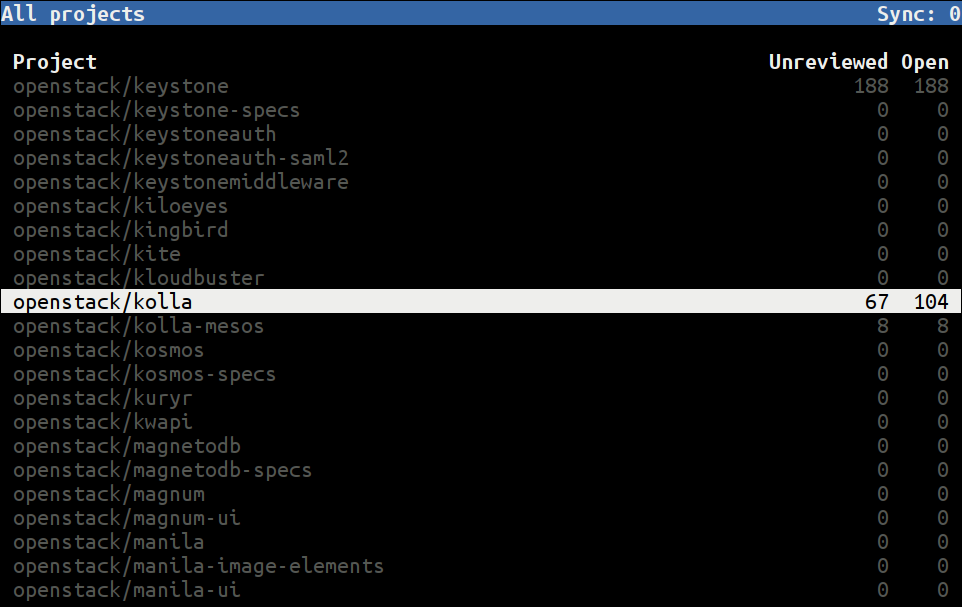
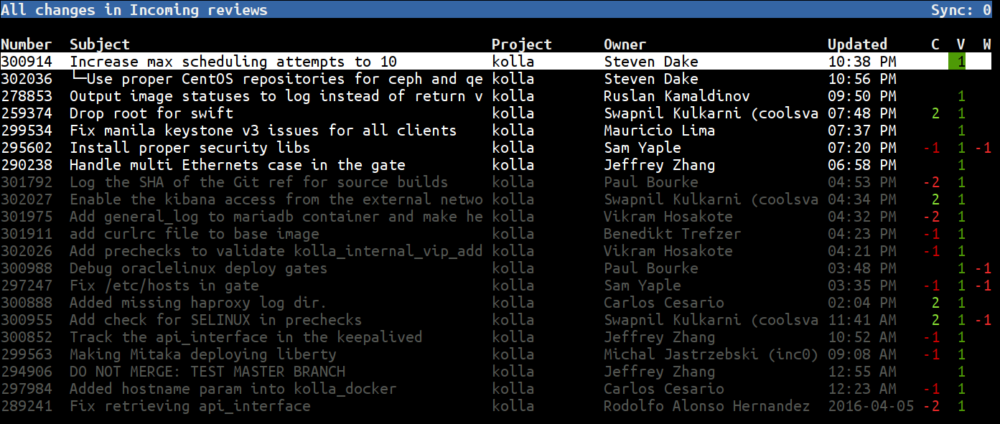

现在很多项目都使用 Gerrit 做为代码 Review 工具。OpenStack 所有的项目就是放在 Gerrit 上的。Gerrit 提供了一个 Web 页面来做 Code Review。今天我介绍一个更加高效的工具来处理 Gerrit Review。它的名字叫 gertty。
Gertty 的 OpenStack 下面的一个项目，官方的介绍是：Gertty is a console-based interface to the Gerrit Code Review system。就是一个基于终端的 Gerrit 代码 Review 工具。
相比较 Web 版本，它的优势体现在
gertty 就是一个 Python 写的应用，所以安装很方便。可以从 pypi 安装，也可以从直接从源码安装。
从源码安装
Gertty 使用一个 YAML 格式的配置文件。可以从源码里找到一些例子。我们以 OpenStack 为例。
首先要选配置在 Gerrit 上面配置自己的 HTTP Passowrd。打开 https://review.openstack.org/#/settings/http-password , 去修改里面的 Password
如果使用源码安装，请把把源码里的 examples/openstack-gertty.yaml 文件拷贝到 ~/.gertty.yml，修改该文件内容如下(主要是 servers 下面的内容)，其它部分不用修改：
如果使用 pip 安装的，在 /usr/local/share/gertty/examples/openstack-gertty.yaml 这个位置可以找到所需要的文件。
直接运行 gertty, 看到如下欢迎界面。

如里面的说明，按F1或? 进帮助， 我们按 L 进项目列表，找到自己感兴趣的项目按 s 进行订阅。

按 F2 可以看到自己的 changes

按 F3 可以看到需要自己 review 的代码

基中，高亮的是需要自己 review 的代码，灰色的是已经 review 过的。
选择一个进入后，能看到已经所有的 review 信息。包括 CI 的结果，评论，所有的 PatchSet。

再按 d， 可以查看修改的 diff

在任何界面都可以按 F1 或 ? 打开帮助，查看该界面下有哪些按键可以用。
examples/reference-gertty.yml 文件里的内容点击「阅读原文」，能看到更好的排版。